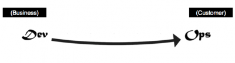
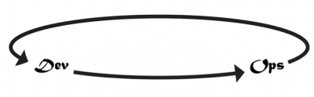
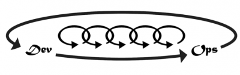

11 cosas sobre DevOps (5): Los principios puntales

El quinto punto que Gene Kim recomienda conocer sobre DevOps, describe los principios fundamentales, que no dejan de ser las Tres vías que menciona en sus libros DevOps Cookbook y The Phoenix Project. Como en los anteriores artículos, podéis enviar vuestros comentarios al hashtag #11cosasdevops.
5. ¿Cuáles son los pilares principales de DevOps?
En DevOps Cookbook y The Phoenix Project describimos [*] los pilares fundamentales por los que todos los patrones DevOps pueden derivarse como las Tres vias. Éstas describen los valores y filosofías que enmarcan los procesos, procedimientos, y prácticas, así como los pasos prescriptivos.
La primera vía: Pensamiento sistémico
La primera vía enfatiza el rendimiento del sistema entero, como oposición al del trabajo específico de un sólo departamento, equipo, división o individuo. El foco está en todos los flujos de valor de negocio habilitados por IT. En otras palabras, empieza cuando se identifican requerimientos, por el negocio o IT, se crea la solución en Desarrollo y se mueve a Operaciones IT, donde el valor se entrega al cliente. Los resultados de la puesta en práctica de la primera vía incluyen nunca permitir que un error conocido avance hacia centros de trabajo más adelante en el flujo de trabajo, nunca permitir que la optimización local cree degradación global, buscar siempre incrementar el flujo, y buscar alcanzar el conocimiento más profundo del sistema.
La segunda vía: Amplificar los bucles de retroalimentación
La segunda vía consiste en crear bucles de retroalimentación de derecha a izquierda. El objectivo de casi cualquier proceso de mejora es acortar y amplificar los bucles de modo que las correcciones necesarias puedan realizarse contínuamente. Los resultados de la segunda vía incluyen comprensión y respuesta a las necesidades de los clientes, internos y externos, el acortamiento y amplificación de los bucles de retroalimentación, y incluyendo conocimiento donde sea necesario.
La tercera vía: Cultura de experimentación y aprendizaje contínuos
La tercera vía fomenta la creación de una cultura basada en dos cosas: La experimentación contínua, que requiere asumir riesgos y aprender del éxito y del fracaso, por un lado; y la comprensión de que la repetición y la práctica son prerequisitos para la maestría. Ambas son necesarias por igual. La experimentación y la asunción del riesgo son la garantía de permanecer en marcha hacia la mejora, incluso cuando signifique entrar en la zona de peligro más allá de lo que se haya entrado nunca. La maestría es necesaria en las habilidades pertinentes para poder salir de la zona de peligro cuando se ha ido demasiado lejos. Los resultados de la tercera vía incluyen encontrar tiempo para la mejora del trabajo diario, crear rituales que recompensen al equipo por asumir riesgos, y introducir fallos con en el sistema para incrementar la resistencia.
| [*] | La primera persona hace referencia al autor del original. |